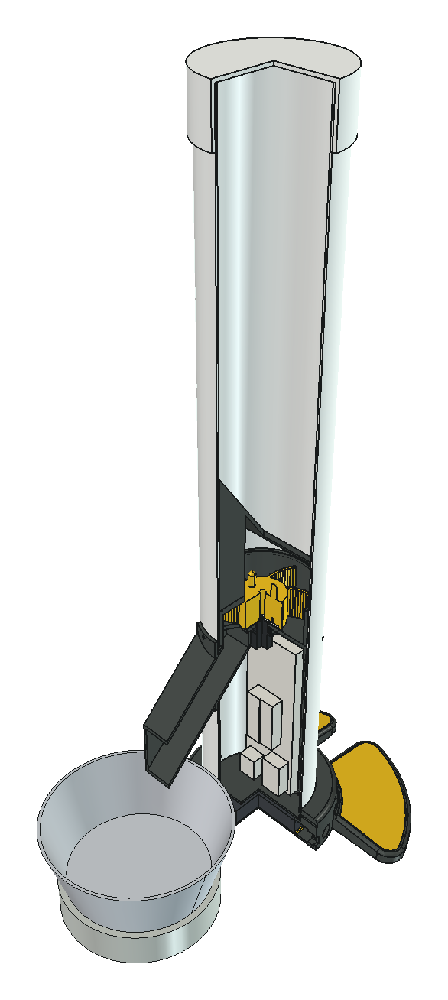
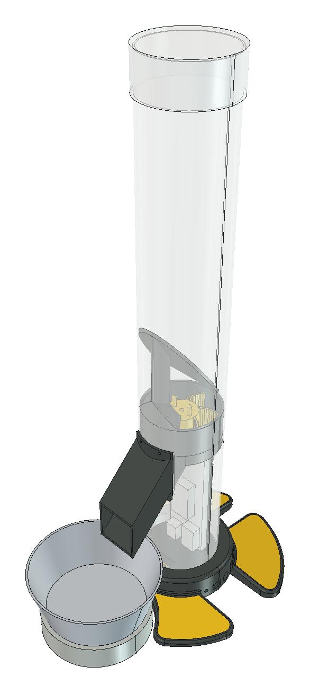
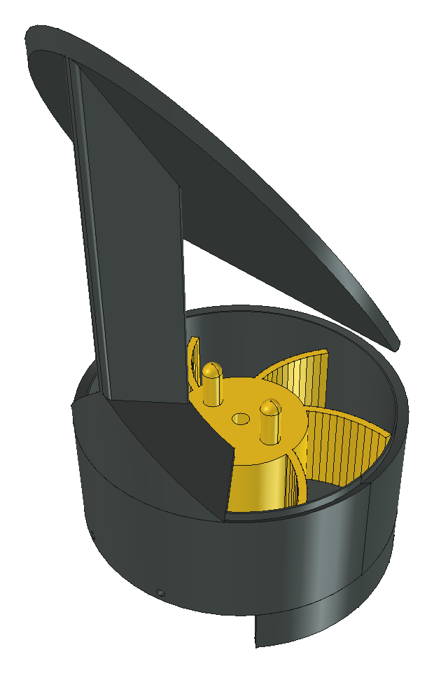
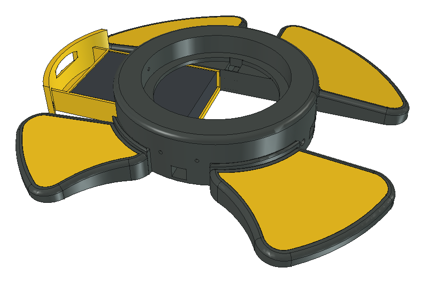
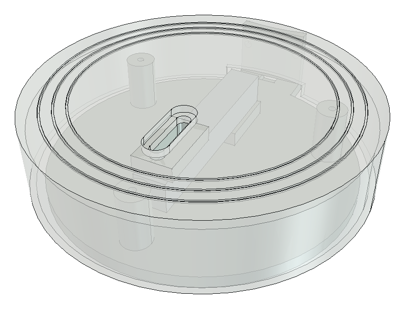
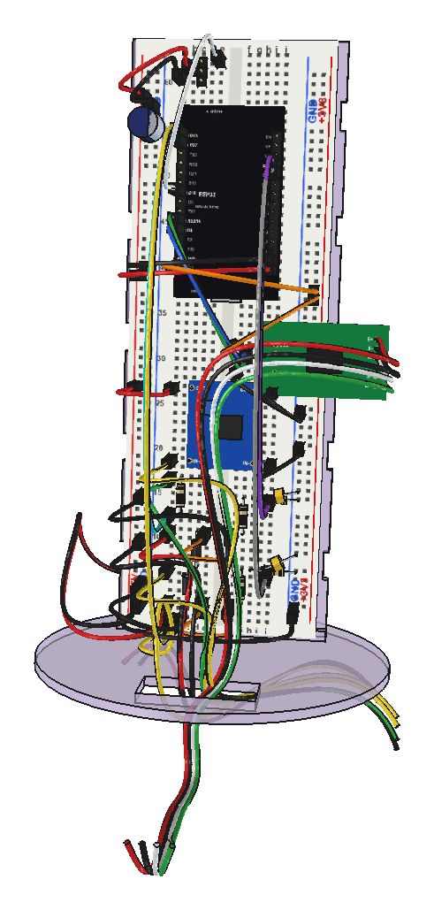

Corte
Tudo dentro do tubo
Cartucho dosador no meio, eletrônica em pé numa espinha logo abaixo, pilhas no pedestal. Por fora só ficam o tubo, a bica e a balança.
Sistemas Automatizados · hardware aberto
Pesada na balança, não cronometrada.
Um tubo de PVC, um rotor de bolsos e uma célula de carga de 5 kg. O ESP32 gira o rotor até a vasilha marcar os gramas programados no celular. Faça o tour pela máquina ou sirva uma refeição de teste.
Nº 0001 · 2026 · Brasil

Arraste para girar · role para zoom · clique numa peça · aperte o botão do pedestal
Malha fechada
Alimentadores comuns abrem a comporta por um tempo fixo e torcem para a ração cair igual. Aqui o ESP32 gira o rotor em pulsos e pesa entre um pulso e outro. Perto da meta, desacelera e solta grão a grão.
Horários e gramas no app. A agenda fica guardada no ESP32 e continua valendo sem internet.
Servo de 360° gira o rotor de 6 bolsos; a ração desce pela bica até a vasilha.
Célula de 5 kg + HX711 de 24 bits. Sem ganho de peso, o rotor recua e tenta de novo; quatro falhas viram alerta.
Registro da refeição no app: meta, servido, duração. Mais bateria e quanto resta no tubo.

Corte
Cartucho dosador no meio, eletrônica em pé numa espinha logo abaixo, pilhas no pedestal. Por fora só ficam o tubo, a bica e a balança.

Dosador

Base

Balança

Eletrônica
Impressão 3D · PETG
Arquivos já deitados na posição de impressão, sem suporte (só o chapéu pede um pouco). Camada de 0,2 mm, 3–4 perímetros, 20 % de preenchimento. Cerca de %%totalH%% h numa impressora rápida.
Lista de compras
Marque o que já foi comprado: fica salvo neste navegador. Custo do projeto inteiro: cerca de R$ %%orcCompras%% em compras avulsas + R$ %%orcImpressao%% de impressão 3D terceirizada, uns R$ %%orcTotal%% no total.
| Comprado | # | Item | Especificação | Usa | Comprar |
|---|
Passo a passo
De 6 a 9 horas de montagem, fora a impressão, em dois ou três encontros. A mecânica e a eletrônica andam em paralelo. Não pule os "Confira": são eles que evitam queimar placa ou desmontar tudo depois.
Manual
Por que é assim
Com o tubo cheio, a coluna de ração aperta o rotor mais do que o servo aguenta. Uma simulação de elementos discretos (cada grão é uma esfera com atrito e rolamento) comparou cinco formas de aliviar essa carga.
Cone central derruba o torque, mas entope com grão grande: forma um arco na fresta.
Bloco reto sobre o escudo prensava o grão contra a parede.
Cumeeira a 45° resolve os dois e ainda esvazia o tubo até o fim: sobram 1,2 g, contra 8,9 g sem chapéu.
Arquivos